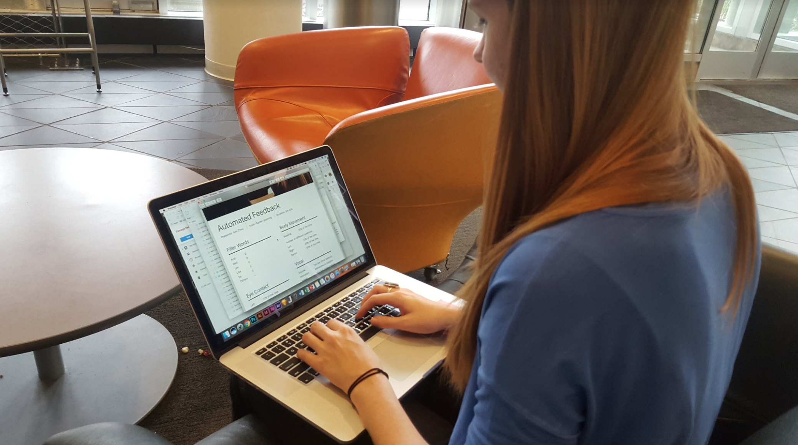
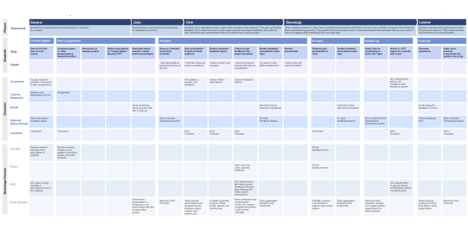
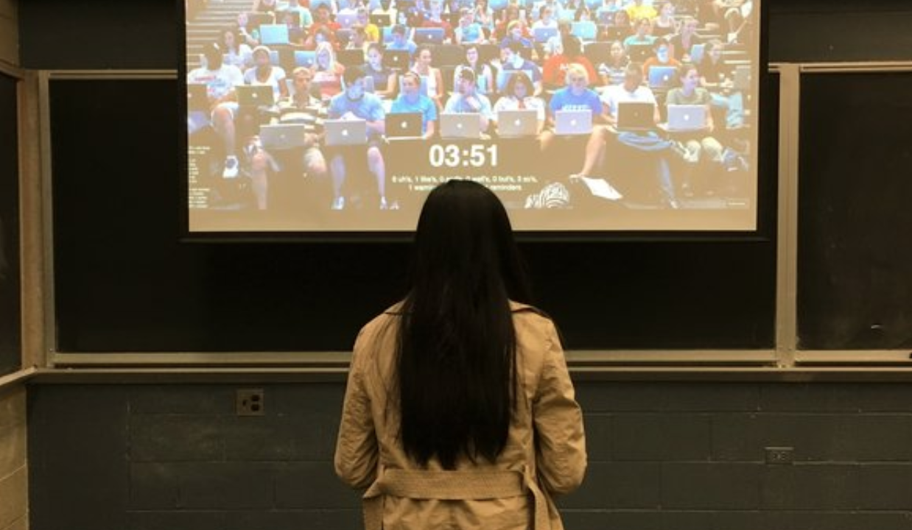

Introducing Echo
Echo is a communication practice tool that incorporates automated, peer, and expert
feedback. A two-part system, it supports solo practice and serves as
an in-class supplement with the support of faculty and peers.
Echo is found at the intersection of the parties
that enable its success: Service facilitators who provide the financial
and infrastructure support, and feedback providers who enhance the automated
reports with holistic guidance and long term rhetorical strategy development.


How it works
Echo's service blueprint spans the complete journey of a student who receives a
new assignment and uses Echo to prepare and deliver a presentation.
The student's actions are mapped with the touchpoints, stakeholders,
and processes that comprise the service, providing a comprehensive view of how Echo
is designed to support the development of successful communication skills.
Please click
here for an expanded view.

To demonstrate the technical feasibility of automated feedback, we looked into current speech parsing and body position detection tools, such as Ummo, CMU Sphinx, and Microsoft Kinect.

Next steps
Our concept was met with enthusiasm and technical questions about implementation,
signaling interest in carrying this idea forward. Stakeholders are currently
investigating how to make Echo a part of CMU's resource offerings, potentially
hosted within the campus library, and we are proud and humbled by its positive reception.
